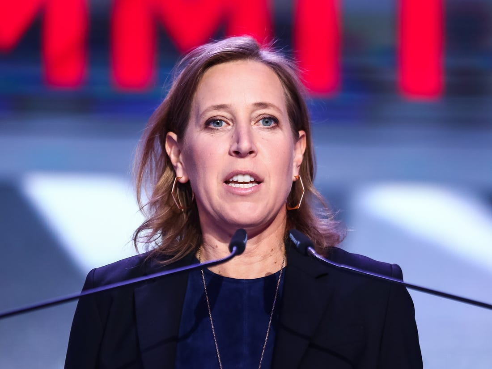

History of the Internet
YouTube is an American online video-sharing platform headquartered in San Bruno, California.
Three former PayPal employees—Chad Hurley, Steve Chen, and Jawed Karim — created the service
in February 2005. Google bought the site in November 2006 for US$1.65 billion;YouTube now operates
as one of Google's subsidiaries.
Founded: February 14, 2005, San Mateo, CA
Founders: Jawed Karim, Steve Chen, Chad Hurley.
CEO: Susan Wojcicki (Feb 5, 2014–)
Headquarters: San Bruno, CA
